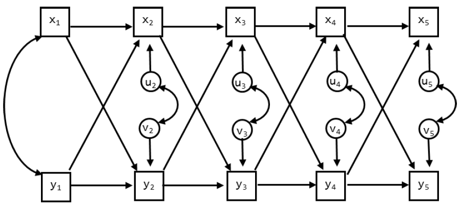

Part 1: The CLPM and RI-CLPM
Day 4: Causal Inference in Cross-Lagged Panel Research
In the first part of the computer lab, we focus predominantly on Phase III of the causal research process, specifically the fitting of the traditional cross-lagged panel model (CLPM) and the random intercept cross-lagged panel model (RI-CLPM) to data. This is to get you acquainted with popular longitudinal SEM models in the literature. We want to emphasize that for your own research, Phases I and II are equally important as the estimation of statistical models. See Mulder et al. (2024) and Mulder, Usami, and Hamaker (2024) for examples of how cross-lagged panel models fit within the (causal) potential outcomes framework.
We are going to analyze data that were reported in Davies et al. (2016). The summary data (means, standard deviations and correlation matrix) are included in Davies.dat, and contains the means, standard deviations, and the correlation matrix. The number of observations is 232. There are 5 waves of data, taken when the child was 7, 8, 13, 14, and 15 years old. The order of the variables is:
- Child gender
- Parental education
- Interparental hostility (waves 1-5): composite score based on observational data and questionnaires, reflecting the degree of hostility between the parents
- Interparental dysphoria (waves 1-5): based on composite score based on observational data and questionnaires, reflecting the degree of dysphoria
- Child/adolescent insecurity in the relationship with the parents (waves 1-5)
- Psychological problems (waves 1-5): based on the subscales anxious/depressed, withdrawal, aggressive behaviors, and delinquency scales of the Child Behavior Checklist (CBCL), filled out by both parents.
Here we will focus on Interparental dysphoria and Psychological problems of the child. The DATA and VARIABLE commands should be:
DATA:
TYPE = MEANS STDEVIATIONS CORRELATION;
FILE = Davies.dat;
NOBSERVATIONS = 232;
VARIABLE:
NAMES = ChildGen ParentEd
Hos1 Hos2 Hos3 Hos4 Hos5 Dys1 Dys2 Dys3 Dys4 Dys5
Ins1 Ins2 Ins3 Ins4 Ins5 PsPr1 PsPr2 PsPr3 PsPr4 PsPr5;
USEVARIABLES = Dys1-Dys5 PsPr1-PsPr5;Exercise A
How many sample statistics are there for this data set (focusing on the 5 measures of dysphoria and the 5 measures of psychological problems)?
There are 10 observed variables such that there are \(\frac{10*11}{2} = 55\) unique elements in the observed covariance matrix S, and 10 observed means in M. Therefore, there are 65 sample statistics in total.
Exercise B
We begin with an RI-CLPM. For now, do not impose any constraints on the parameters across time. Draw the model, and indicate which parameters will be estimated freely. How many parameters will be estimated in total? So how many df are there?
In the RI-CLPM we estimate:
- 2 variances for the random intercepts,
- 1 covariance between the random intercepts,
- 2 variances for the within-person centered variables at wave 1,
- 1 covariance between the within-person centered variables at wave 1,
- 8 residual variances (for the dynamic errors of both variables at wave 2-5),
- 4 covariances between the residuals (for the dynamics errors at waves 2-5),
- 16 lagged parameters (4 for each interval), and
- 10 means.
In total, we estimate 44 parameters such that we have \(65 - 44 = 21\) df.
Exercise C
Run the model. Check whether the number of df is correct. Also look at the TECH1 output, to see if you understand where the free parameters are. What is the model fit?
The input for this model is in RICLPM.inp. The model means are estimated in the \(\nu\)-matrix, no parameters are estimated in the \(\theta\)-matrix (measurement error variances), \(\lambda\)-matrix (factor loadings), or \(\alpha\)-matrix (means/intercepts of the latent variables). The variances and covariance of the random intercepts, the within-person centered variables at wave 1, and the dynamic errors at subsequent waves are all estimated in the \(\psi\)-matrix. The lagged regression coefficients are estimated in \(\beta\).
Apart from the \(\chi^{2}\)-test of model, all fit indices indicate at least acceptable fit.
- \(\chi^{2} (21) = 41.451\), \(p = .005\),
- RMSEA = 0.065,
- CFI = 0.979,
- TLI = 0.956, and
- SRMR = 0.029.
Exercise D
Include the significant standardized parameter estimates for the covariances (i.e., the WITH statements) and the lagged regression parameters (i.e., the ON statements) in the figure below. Indicate which part of the model is considered the between-person part (i.e., only person-specific, not changing over time), and which part is the within-person part (i.e., both person- and time-specific).
Exercise E
Omit the random intercepts. How many parameters and df does this model have? What is the model fit?
The input for this model is CLPMasRICLPM.inp. The model has three parameters less (and thus 3 df more) than the previous model: 2 variances and the covariance for the random intercepts.
The model fit indices show that this model does not fit well:
- \(\chi^{2} (24) = 73.374\), \(p < .001\),
- RMSEA = 0.094,
- CFI = 0.950,
- TLI = 0.907, and
- SRMR = 0.061.
Exercise F
Specify the CLPM and run this model. Compare it to the previous two models. How are these models related?
The input for this model is in CLPM.inp. This model is statistically identical to the previous model; these are different parameterizations of the same model. The model fit is therefore also exactly the same. Hence, this model is a special case of the RI-CLPM.
Comparing the two models using a chi-square difference test gives: \(\Delta \chi^{2} = 73.37 - 41.45 = 31.92\) with \(24 – 21 = 3\) df, \(p < .001\). Hence, the random intercepts should not be omitted; put differently, there are stable, trait-like difference between families in the two variables (parental dysphoria and psychological problems).
However, when constraints are placed on the bound of the parameter space (which is the case here, fixing a variance to 0 is its absolute minimum value), we should actually use the chi-bar-square test (\(\bar{\chi}^{2}\)-test; Stoel et al. 2006). The traditional \(\Delta \chi^{2}\)-test does not take into account that variances can only be positive and is therefore conservative. This means that if it is significant, we are certain that the correct test (i.e., the \(\bar{\chi}^{2}\) test) would also be significant. On the other hand, when the usual chi‐square test is not significant, we do not know anything about the result of the correct test (it can be significant or not significant).
If you are working in R with the lavaan package, you can find more information about the \(\bar{\chi}^{2}\)-test at jeroendmulder.github.io/RI-CLPM/lavaan.html#(bar{chi}^{2})-test. For Mplus users, there is a Shiny app by Rebecca Kuiper available as well.
Exercise G
Include the significant standardized parameter estimates for the covariances and the lagged regression parameters in the figure below.

Exercise H
Discuss how the model results differ.
Cross-lagged relationships In the RI-CLPM none of the cross-lagged parameters are significant. In contrast, in the CLPM there is a positive relationship from PsPr1 to Dys2. This implies that higher levels of children’s psychological problems at age 7 are followed by higher levels of interparental dysphoria at age 8. Moreover, from age 14 to 15 both cross-lagged parameters are significant and positive, indicating that psychological problems are followed by increases in interparental dysphoria, but also that increased interparental dysphoria is followed by an increase in psychological problems for the adolescent.
Autoregressive parameters The autoregressive parameters in the RI-CLPM are lower, and have larger SE’s, such that fewer reach significance. This is expected as within-person stability is now captures in the random intercepts, rather than in the autoregressive effects in the CLPM.
Correlations In the CLPM only the residual correlation at wave 2 is significant; it is negative, indicating that external effects tend to have an opposite effect on these two processes; increases in Dysphoria are accompanied by decreases in psychological problems and vice versa. In the RI-CLPM, the within-person correlation at wave 1 is not significantly different from zero; however, at waves 2, 3 and 4 the correlations between the residuals is significant and negative. At wave 5 the residual variance is not significant.
In the RI-CLPM there is also the correlation between the random intercepts (i.e., the trait-like difference between families). This turns out to be a very substantial correlation of .63: Hence, in contrast to the results from the CLPM and the within-level results from the RI-CLPM, there is a strong positive relationship between trait-like levels of interparental dysphoria and trait-like levels of psychological problems.